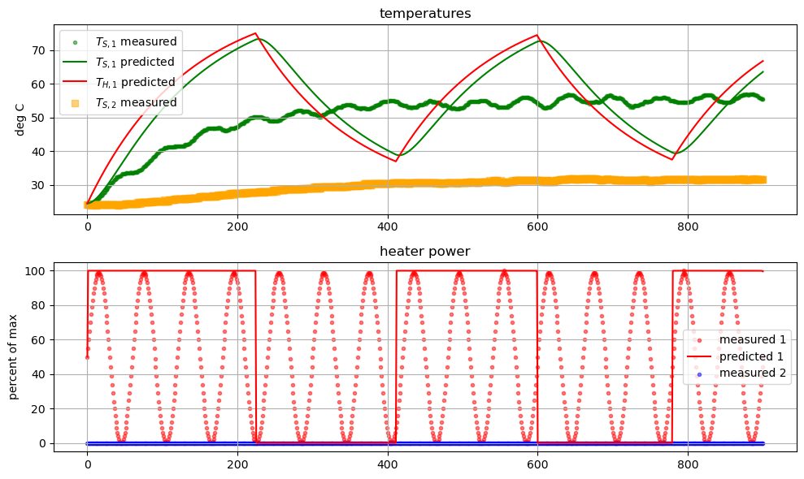
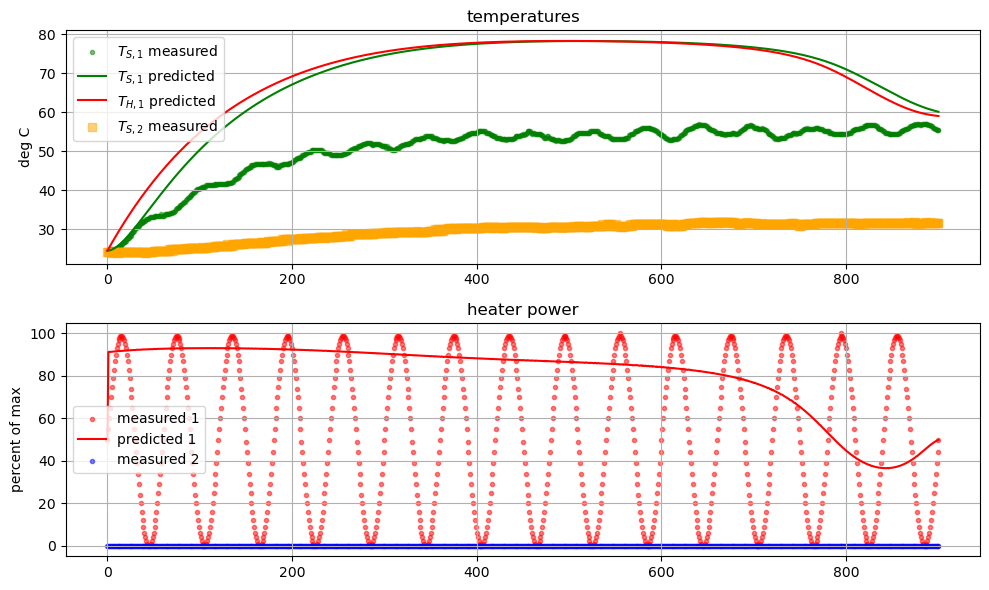

Pyomo.DoE: Optimization#
import sys
# If running on Google Colab, install Pyomo and Ipopt via IDAES
on_colab = "google.colab" in sys.modules
if on_colab:
!wget "https://raw.githubusercontent.com/dowlinglab/pyomo-doe/main/notebooks/tclab_pyomo.py"
# import TCLab model, simulation, and data analysis functions
from tclab_pyomo import TCLabExperiment, create_model, extract_results, extract_plot_results, results_summary
# set default number of states in the TCLab model
number_tclab_states = 2
Load experimental data (sine test)#
import pandas as pd
if on_colab:
file = "https://raw.githubusercontent.com/dowlinglab/pyomo-doe/main/data/tclab_sine_test.csv"
else:
file = '../data/tclab_sine_test.csv'
df = pd.read_csv(file)
df.head()
| Time | T1 | T2 | Q1 | Q2 | |
|---|---|---|---|---|---|
| 0 | 0.00 | 24.45 | 24.13 | 50.0 | 0.0 |
| 1 | 1.00 | 24.45 | 24.13 | 55.0 | 0.0 |
| 2 | 2.01 | 24.45 | 24.13 | 60.0 | 0.0 |
| 3 | 3.01 | 24.45 | 24.13 | 65.0 | 0.0 |
| 4 | 4.01 | 24.77 | 23.81 | 70.0 | 0.0 |
ax = df.plot(x='Time', y=['T1', 'T2'], xlabel='Time (s)', ylabel='Temperature (°C)')

ax = df.plot(x='Time', y=['Q1', 'Q2'], xlabel='Time (s)', ylabel='Heater Power (%)')

tc_data = TCLabExperiment(name="Sine Wave Test for Heater 1",
time=df['Time'].values,
T1=df['T1'].values,
u1=df['Q1'].values,
P1=200,
TS1_data=None,
T2=df['T2'].values,
u2=df['Q2'].values,
P2=200,
TS2_data=None,
Tamb=df['T1'].values[0])
Calculate FIM at initial point (sine test)#
# Load Pyomo.DoE functions
from pyomo.contrib.doe import (
ModelOptionLib,
DesignOfExperiments,
MeasurementVariables,
DesignVariables,
)
from pyomo.environ import SolverFactory
# Copied from previous notebook
theta_values = {'Ua': 0.05147278733764012, 'Ub': 0.0005342082856927798, 'inv_CpH': 0.14622879403418604, 'inv_CpS': 99.99999754623846}
# Get time points for control decisions
t_control = tc_data.time
measurements = MeasurementVariables()
measurements.add_variables('Ts1',
indices={0: t_control},
time_index_position = 0)
decisions = DesignVariables()
decisions.add_variables('U1',
indices={0: t_control},
time_index_position = 0,
lower_bounds=0,
upper_bounds=100,
values=tc_data.u1)
def create_model_doe(theta=theta_values):
return create_model(data=tc_data,
mode='doe',
theta=theta,
integrate_to_initialize=True,
number_of_states=number_tclab_states)
# Create doe_object using DesignOfExperiments
doe_object1 = DesignOfExperiments(
theta_values, # dictionary of parameters
decisions, # design variable
measurements, # measurement variable
create_model_doe, # model
solver=SolverFactory('ipopt')
)
result = doe_object1.compute_FIM(
mode='sequential_finite',
formula = 'central'
)
result.result_analysis()
Ipopt 3.13.2:
******************************************************************************
This program contains Ipopt, a library for large-scale nonlinear optimization.
Ipopt is released as open source code under the Eclipse Public License (EPL).
For more information visit http://projects.coin-or.org/Ipopt
******************************************************************************
This is Ipopt version 3.13.2, running with linear solver ma27.
Number of nonzeros in equality constraint Jacobian...: 111616
Number of nonzeros in inequality constraint Jacobian.: 0
Number of nonzeros in Lagrangian Hessian.............: 0
Total number of variables............................: 39626
variables with only lower bounds: 0
variables with lower and upper bounds: 23408
variables with only upper bounds: 0
Total number of equality constraints.................: 39626
Total number of inequality constraints...............: 0
inequality constraints with only lower bounds: 0
inequality constraints with lower and upper bounds: 0
inequality constraints with only upper bounds: 0
iter objective inf_pr inf_du lg(mu) ||d|| lg(rg) alpha_du alpha_pr ls
0 0.0000000e+00 1.00e+00 0.00e+00 -1.0 0.00e+00 - 0.00e+00 0.00e+00 0
1 0.0000000e+00 1.00e-02 1.12e-01 -1.0 1.00e+00 - 9.80e-01 9.90e-01h 1
2 0.0000000e+00 9.90e-05 9.90e+00 -1.0 1.00e-02 - 1.00e+00 9.90e-01h 1
3 0.0000000e+00 2.13e-14 1.26e-05 -1.0 9.90e-05 - 1.00e+00 1.00e+00h 1
Number of Iterations....: 3
(scaled) (unscaled)
Objective...............: 0.0000000000000000e+00 0.0000000000000000e+00
Dual infeasibility......: 0.0000000000000000e+00 0.0000000000000000e+00
Constraint violation....: 2.1316282072803006e-14 2.1316282072803006e-14
Complementarity.........: 0.0000000000000000e+00 0.0000000000000000e+00
Overall NLP error.......: 2.1316282072803006e-14 2.1316282072803006e-14
Number of objective function evaluations = 4
Number of objective gradient evaluations = 4
Number of equality constraint evaluations = 4
Number of inequality constraint evaluations = 0
Number of equality constraint Jacobian evaluations = 4
Number of inequality constraint Jacobian evaluations = 0
Number of Lagrangian Hessian evaluations = 3
Total CPU secs in IPOPT (w/o function evaluations) = 0.080
Total CPU secs in NLP function evaluations = 0.007
EXIT: Optimal Solution Found.
INFO: elapsed time: 7.1 seconds
results_summary(result)
======Results Summary======
Four design criteria log10() value:
A-optimality: 9.698903678286175
D-optimality: nan
E-optimality: nan
Modified E-optimality: nan
FIM:
[[ 1.88459415e+08 -1.91393890e+08 -8.24201918e+06 -1.04121590e+03]
[-1.91393890e+08 4.80931030e+09 6.51658566e+07 2.58102008e+04]
[-8.24201918e+06 6.51658566e+07 1.46673544e+06 3.51179540e+02]
[-1.04121590e+03 2.58102008e+04 3.51179540e+02 1.38519624e-01]]
eigenvalues:
[ 4.81811358e+09 1.80716021e+08 4.06846518e+05 -2.41067013e-16]
eigenvectors:
[[ 4.13259139e-02 -9.98655750e-01 3.12867703e-02 -1.00570603e-13]
[-9.99053330e-01 -4.17276557e-02 -1.22982147e-02 -5.33299017e-06]
[-1.35872064e-02 3.07489171e-02 9.99434786e-01 -2.48897567e-06]
[-5.36175981e-06 -1.45999972e-07 2.42198261e-06 1.00000000e+00]]
/Users/adowling/DowlingLab/pyomo-doe/notebooks/tclab_pyomo.py:624: RuntimeWarning: invalid value encountered in log10
print("D-optimality:", np.log10(result.det))
/Users/adowling/DowlingLab/pyomo-doe/notebooks/tclab_pyomo.py:625: RuntimeWarning: invalid value encountered in log10
print("E-optimality:", np.log10(result.min_eig))
/Users/adowling/DowlingLab/pyomo-doe/notebooks/tclab_pyomo.py:626: RuntimeWarning: invalid value encountered in log10
print("Modified E-optimality:", np.log10(result.cond))
Optimize next experiment (D-optimality)#
# Extract the prior FIM and Jacobian information from the previous
# result to use for initialization.
prior = result.FIM.copy()
jac_for_initialization = result.jaco_information.copy()
# Set Ipopt options
solver = SolverFactory('ipopt')
#solver.options['bound_push'] = 1E-10
solver.options['halt_on_ampl_error'] = 'yes'
#solver.options['tol'] = 1E-5
#solver.options['acceptable_tol'] = 1E-4
#solver.options['max_iter'] = 100
solver.options['linear_solver'] = 'ma57'
# Create a new DoE object
doe_object2 = DesignOfExperiments(
theta_values, # dictionary of parameters
decisions, # design variable
measurements, # measurement variable
create_model_doe, # model
solver=solver,
prior_FIM=prior # use previous experiment as prior
)
# Solve the DoE problem
square_result2, optimize_result2 = doe_object2.stochastic_program(
if_optimize=True, # optimize
if_Cholesky=True, # use Cholesky decomposition
scale_nominal_param_value=True, # scale model parameter value
objective_option="det", # objective option (need to debug/improve initialization)
jac_initial=jac_for_initialization, # initialize Jacobian with prior solution
step = 0.01 # step size
)
Ipopt 3.13.2: halt_on_ampl_error=yes
linear_solver=ma57
******************************************************************************
This program contains Ipopt, a library for large-scale nonlinear optimization.
Ipopt is released as open source code under the Eclipse Public License (EPL).
For more information visit http://projects.coin-or.org/Ipopt
******************************************************************************
This is Ipopt version 3.13.2, running with linear solver ma57.
Number of nonzeros in equality constraint Jacobian...: 136846
Number of nonzeros in inequality constraint Jacobian.: 0
Number of nonzeros in Lagrangian Hessian.............: 9010
Total number of variables............................: 43240
variables with only lower bounds: 0
variables with lower and upper bounds: 23408
variables with only upper bounds: 0
Total number of equality constraints.................: 43240
Total number of inequality constraints...............: 0
inequality constraints with only lower bounds: 0
inequality constraints with lower and upper bounds: 0
inequality constraints with only upper bounds: 0
iter objective inf_pr inf_du lg(mu) ||d|| lg(rg) alpha_du alpha_pr ls
0 0.0000000e+00 9.62e+09 0.00e+00 -1.0 0.00e+00 - 0.00e+00 0.00e+00 0
Reallocating memory for MA57: lfact (1796418)
1 0.0000000e+00 4.80e+09 1.14e-01 -1.0 1.94e+07 - 9.80e-01 9.90e-01h 1
2 0.0000000e+00 4.80e+07 9.90e+00 -1.0 4.80e+09 - 1.00e+00 9.90e-01h 1
3 0.0000000e+00 4.71e+01 1.26e-05 -1.0 4.80e+07 - 1.00e+00 1.00e+00h 1
4 0.0000000e+00 1.91e-11 3.61e-10 -1.7 4.71e+01 - 1.00e+00 1.00e+00h 1
Number of Iterations....: 4
(scaled) (unscaled)
Objective...............: 0.0000000000000000e+00 0.0000000000000000e+00
Dual infeasibility......: 0.0000000000000000e+00 0.0000000000000000e+00
Constraint violation....: 3.4674485505092889e-12 1.9099388737231493e-11
Complementarity.........: 0.0000000000000000e+00 0.0000000000000000e+00
Overall NLP error.......: 3.4674485505092889e-12 1.9099388737231493e-11
Number of objective function evaluations = 5
Number of objective gradient evaluations = 5
Number of equality constraint evaluations = 5
Number of inequality constraint evaluations = 0
Number of equality constraint Jacobian evaluations = 5
Number of inequality constraint Jacobian evaluations = 0
Number of Lagrangian Hessian evaluations = 4
Total CPU secs in IPOPT (w/o function evaluations) = 0.341
Total CPU secs in NLP function evaluations = 0.020
EXIT: Optimal Solution Found.
Ipopt 3.13.2: halt_on_ampl_error=yes
linear_solver=ma57
******************************************************************************
This program contains Ipopt, a library for large-scale nonlinear optimization.
Ipopt is released as open source code under the Eclipse Public License (EPL).
For more information visit http://projects.coin-or.org/Ipopt
******************************************************************************
This is Ipopt version 3.13.2, running with linear solver ma57.
Number of nonzeros in equality constraint Jacobian...: 144995
Number of nonzeros in inequality constraint Jacobian.: 0
Number of nonzeros in Lagrangian Hessian.............: 9030
Reallocating memory for MA57: lfact (2309002)
Total number of variables............................: 44157
variables with only lower bounds: 4
variables with lower and upper bounds: 24309
variables with only upper bounds: 0
Total number of equality constraints.................: 43250
Total number of inequality constraints...............: 0
inequality constraints with only lower bounds: 0
inequality constraints with lower and upper bounds: 0
inequality constraints with only upper bounds: 0
iter objective inf_pr inf_du lg(mu) ||d|| lg(rg) alpha_du alpha_pr ls
0 -2.7275601e+01 4.73e-03 1.23e-03 -1.0 0.00e+00 - 0.00e+00 0.00e+00 0
1 -2.7275050e+01 3.60e-02 1.00e-02 -1.0 2.64e+02 - 9.90e-01 1.00e+00f 1
2 -2.7227492e+01 3.24e+02 2.79e-04 -1.0 2.52e+04 - 9.90e-01 1.00e+00f 1
3 -2.7032094e+01 1.17e+02 1.86e-01 -1.0 1.90e+05 - 1.00e+00 1.00e+00F 1
4 -2.7054134e+01 2.53e+00 8.67e-04 -1.0 8.67e+00 -4.0 1.00e+00 1.00e+00h 1
5 -2.7065743e+01 1.08e+03 9.74e-04 -1.0 3.48e+04 - 1.00e+00 1.00e+00f 1
6 -2.7071352e+01 1.64e+01 4.75e-06 -1.0 5.70e+03 - 1.00e+00 1.00e+00h 1
7 -2.7071367e+01 2.71e-03 1.00e-06 -1.0 3.75e+01 - 1.00e+00 1.00e+00h 1
8 -2.7072678e+01 1.27e-01 5.16e-06 -2.5 2.80e+02 - 1.00e+00 1.00e+00h 1
9 -2.7117076e+01 1.44e+02 2.34e-04 -2.5 9.00e+03 - 1.00e+00 1.00e+00h 1
iter objective inf_pr inf_du lg(mu) ||d|| lg(rg) alpha_du alpha_pr ls
10 -2.7117869e+01 1.34e-02 1.14e-07 -2.5 1.37e+02 - 1.00e+00 1.00e+00h 1
11 -2.7161922e+01 1.35e+02 2.26e-04 -3.8 8.69e+03 - 9.73e-01 1.00e+00h 1
12 -2.7161425e+01 3.47e-01 4.47e-05 -3.8 1.34e+00 -4.5 1.00e+00 1.00e+00h 1
13 -2.7347359e+01 4.11e+03 4.13e-03 -3.8 7.13e+04 - 1.00e+00 1.00e+00h 1
14 -2.7336582e+01 3.69e+01 2.11e-04 -3.8 1.90e+01 -5.0 1.00e+00 1.00e+00h 1
15 -2.7396865e+01 4.14e+02 3.86e-04 -3.8 9.46e+03 - 1.00e+00 1.00e+00h 1
16 -2.7395574e+01 2.48e+00 9.39e-06 -3.8 2.53e+00 -5.4 1.00e+00 1.00e+00h 1
17 -2.7403082e+01 1.26e+02 9.05e-06 -3.8 2.63e+04 - 2.96e-01 3.61e-02h 4
18 -2.7406984e+01 1.17e+00 2.08e-05 -3.8 1.68e+01 -5.9 1.00e+00 1.00e+00h 1
19 -2.7569082e+01 1.32e+03 2.33e-03 -3.8 2.57e+04 - 1.00e+00 1.00e+00H 1
iter objective inf_pr inf_du lg(mu) ||d|| lg(rg) alpha_du alpha_pr ls
20 -2.7576103e+01 3.36e+02 1.95e-03 -3.8 1.24e+04 - 6.37e-01 1.65e-01h 3
21 -2.7572176e+01 1.05e+01 9.67e-06 -3.8 6.78e+00 -6.4 1.00e+00 1.00e+00h 1
22 -2.7574059e+01 1.51e+01 2.50e-06 -3.8 1.19e+01 -6.9 1.00e+00 1.00e+00h 1
23 -2.7579229e+01 7.33e+01 1.79e-06 -3.8 3.28e+01 -7.3 1.00e+00 1.00e+00h 1
24 -2.7589192e+01 1.39e+02 6.55e-06 -3.8 6.74e+01 -7.8 1.00e+00 1.00e+00h 1
25 -2.7619961e+01 2.51e+02 5.95e-05 -3.8 1.01e+04 - 1.00e+00 1.00e+00h 1
26 -2.7620089e+01 2.86e+01 2.05e-07 -3.8 2.66e+02 - 1.00e+00 1.00e+00h 1
27 -2.7620106e+01 2.92e-01 1.53e-09 -3.8 1.86e+01 - 1.00e+00 1.00e+00h 1
28 -2.7620107e+01 3.97e-05 1.50e-09 -3.8 6.32e-02 - 1.00e+00 1.00e+00h 1
29 -2.7911402e+01 2.67e+03 6.43e-03 -5.7 4.10e+04 - 6.82e-01 1.00e+00F 1
iter objective inf_pr inf_du lg(mu) ||d|| lg(rg) alpha_du alpha_pr ls
30 -2.8105224e+01 3.14e+02 9.10e-05 -5.7 5.92e+04 - 6.85e-01 1.00e+00H 1
31 -2.8109431e+01 4.51e+02 7.98e-05 -5.7 8.01e+02 -8.3 1.08e-01 1.15e-01h 1
32 -2.8115198e+01 4.57e+02 1.16e-05 -5.7 1.95e+02 -7.9 6.21e-01 8.34e-01h 1
33 -2.8121258e+01 5.09e+02 6.41e-06 -5.7 7.02e+02 -8.3 4.61e-01 4.50e-01h 1
34 -2.8126629e+01 1.47e+02 3.02e-06 -5.7 2.55e+02 -7.9 1.00e+00 8.99e-01h 1
35 -2.8129350e+01 1.27e+01 2.79e-06 -5.7 8.69e+01 -7.5 1.00e+00 1.00e+00h 1
36 -2.8133877e+01 6.84e+01 3.11e-06 -5.7 2.95e+02 -8.0 1.00e+00 8.82e-01h 1
37 -2.8135297e+01 1.76e+02 3.11e-06 -5.7 8.63e+02 -8.4 1.34e-01 1.09e-01h 1
38 -2.8138651e+01 8.28e+01 3.15e-06 -5.7 3.33e+02 -8.0 1.00e+00 7.51e-01h 1
39 -2.8141715e+01 1.28e+02 3.20e-06 -5.7 1.03e+03 -8.5 6.04e-01 3.70e-01h 1
iter objective inf_pr inf_du lg(mu) ||d|| lg(rg) alpha_du alpha_pr ls
40 -2.8144718e+01 2.67e+01 3.30e-06 -5.7 3.90e+02 -8.1 1.00e+00 1.00e+00h 1
41 -2.8148349e+01 6.56e+01 3.30e-06 -5.7 1.17e+03 -8.5 8.53e-01 5.67e-01h 1
42 -2.8150867e+01 6.49e+00 3.26e-06 -5.7 4.33e+02 -8.1 1.00e+00 1.00e+00h 1
43 -2.8157253e+01 2.93e+01 3.12e-06 -5.7 1.24e+03 -8.6 1.00e+00 1.00e+00h 1
44 -2.8163760e+01 6.72e+01 2.91e-06 -5.7 3.17e+03 -9.1 5.55e-01 4.51e-01h 1
45 -2.8163811e+01 9.02e+01 2.92e-06 -5.7 5.75e+04 -9.6 9.04e-04 1.33e-03h 1
46 -2.8164659e+01 9.69e+01 2.90e-06 -5.7 1.34e+04 -10.0 1.44e-02 1.60e-02h 1
47 -2.8165998e+01 9.94e+01 2.85e-06 -5.7 7.44e+03 -9.6 6.35e-02 4.44e-02h 1
48 -2.8168899e+01 9.22e+01 2.72e-06 -5.7 3.35e+03 -9.2 2.22e-01 2.00e-01h 1
49 -2.8169059e+01 1.12e+02 2.74e-06 -5.7 4.11e+04 -9.7 2.18e-03 2.52e-03h 1
iter objective inf_pr inf_du lg(mu) ||d|| lg(rg) alpha_du alpha_pr ls
50 -2.8171092e+01 1.06e+02 2.65e-06 -5.7 3.55e+03 -9.2 1.63e-01 1.39e-01h 1
51 -2.8174481e+01 6.29e+01 2.46e-06 -5.7 1.46e+03 -8.8 8.51e-01 5.30e-01h 1
52 -2.8174757e+01 9.25e+01 2.50e-06 -5.7 7.51e+03 -9.3 1.51e-02 2.68e-02h 1
53 -2.8174958e+01 1.07e+02 2.51e-06 -5.7 9.15e+04 -9.8 1.08e-03 1.20e-03h 1
54 -2.8175397e+01 1.21e+02 2.51e-06 -5.7 4.38e+04 -10.2 3.03e-03 3.74e-03h 1
55 -2.8176774e+01 1.27e+02 2.49e-06 -5.7 6.58e+05 - 6.92e-03 8.88e-03h 1
56 -2.8178810e+01 1.35e+02 2.44e-06 -5.7 4.44e+05 - 1.55e-02 1.96e-02h 1
57 -2.8180364e+01 1.38e+02 2.40e-06 -5.7 2.53e+05 - 1.50e-02 1.92e-02h 1
58 -2.8181882e+01 1.40e+02 2.35e-06 -5.7 2.14e+05 - 1.65e-02 2.08e-02h 1
59 -2.8183377e+01 1.41e+02 2.29e-06 -5.7 1.89e+05 - 1.80e-02 2.23e-02h 1
iter objective inf_pr inf_du lg(mu) ||d|| lg(rg) alpha_du alpha_pr ls
60 -2.8184870e+01 1.47e+02 2.24e-06 -5.7 1.86e+05 - 1.94e-02 2.37e-02h 1
61 -2.8186933e+01 1.41e+02 2.11e-06 -5.7 5.72e+03 -9.8 8.24e-02 9.46e-02h 1
62 -2.8188713e+01 1.25e+02 1.99e-06 -5.7 3.08e+03 -9.4 1.49e-01 1.47e-01h 1
63 -2.8189127e+01 1.32e+02 1.98e-06 -5.7 8.13e+05 - 1.77e-03 4.24e-03h 1
64 -2.8189963e+01 1.35e+02 1.95e-06 -5.7 1.80e+05 - 1.15e-02 1.54e-02h 1
65 -2.8192520e+01 1.38e+02 1.74e-06 -5.7 5.74e+04 - 6.67e-02 1.07e-01h 1
66 -2.8193119e+01 1.34e+02 1.68e-06 -5.7 3.57e+03 -9.9 7.57e-02 4.57e-02h 1
67 -2.8193472e+01 1.34e+02 1.66e-06 -5.7 3.14e+03 -9.4 2.24e-02 4.42e-02h 1
68 -2.8194708e+01 1.29e+02 1.54e-06 -5.7 4.11e+04 - 7.13e-02 7.19e-02h 1
69 -2.8195761e+01 1.19e+02 1.41e-06 -5.7 2.55e+03 -9.9 1.84e-01 1.04e-01h 1
iter objective inf_pr inf_du lg(mu) ||d|| lg(rg) alpha_du alpha_pr ls
70 -2.8197790e+01 2.50e+00 1.07e-06 -5.7 4.12e+02 -8.6 1.00e+00 1.00e+00h 1
71 -2.8198949e+01 1.63e+01 9.06e-07 -5.7 7.76e+02 -9.1 4.94e-01 4.17e-01h 1
72 -2.8199742e+01 1.69e+01 7.85e-07 -5.7 3.21e+02 -8.6 1.00e+00 7.50e-01h 1
73 -2.8199877e+01 3.10e+01 7.84e-07 -5.7 1.01e+03 -9.1 9.96e-02 1.05e-01h 1
74 -2.8200489e+01 2.12e+01 6.85e-07 -5.7 3.07e+02 -8.7 1.00e+00 6.48e-01h 1
75 -2.8200471e+01 2.58e+01 7.02e-07 -5.7 2.61e+03 -9.2 1.91e-02 1.51e-02h 2
76 -2.8200780e+01 3.12e+01 6.69e-07 -5.7 3.43e+02 -8.7 8.74e-01 4.48e-01h 1
77 -2.8201207e+01 2.02e+00 5.91e-07 -5.7 1.21e+02 -8.3 1.00e+00 1.00e+00h 1
78 -2.8201511e+01 3.92e+00 5.37e-07 -5.7 2.75e+02 -8.8 7.98e-01 3.72e-01h 2
79 -2.8201826e+01 3.63e+00 4.82e-07 -5.7 1.11e+02 -8.4 1.00e+00 1.00e+00h 1
iter objective inf_pr inf_du lg(mu) ||d|| lg(rg) alpha_du alpha_pr ls
80 -2.8202003e+01 5.37e+00 4.53e-07 -5.7 2.64e+02 -8.8 6.85e-01 2.91e-01h 2
81 -2.8202248e+01 5.26e+00 4.12e-07 -5.7 1.07e+02 -8.4 1.00e+00 1.00e+00h 1
82 -2.8202383e+01 6.43e+00 3.90e-07 -5.7 2.57e+02 -8.9 6.25e-01 2.61e-01h 2
83 -2.8202581e+01 6.69e+00 3.60e-07 -5.7 1.05e+02 -8.5 1.00e+00 1.00e+00h 1
84 -2.8202718e+01 8.20e+00 3.39e-07 -5.7 2.52e+02 -8.9 5.99e-01 2.96e-01h 2
85 -2.8202885e+01 7.78e+00 3.16e-07 -5.7 1.04e+02 -8.5 1.00e+00 1.00e+00h 1
86 -2.8202979e+01 8.09e+00 3.01e-07 -5.7 2.45e+02 -9.0 5.38e-01 2.23e-01h 2
87 -2.8203126e+01 8.74e+00 2.81e-07 -5.7 1.04e+02 -8.6 1.00e+00 1.00e+00h 1
88 -2.8203236e+01 9.71e+00 2.64e-07 -5.7 2.43e+02 -9.0 5.48e-01 2.80e-01h 2
89 -2.8203353e+01 1.10e+01 2.54e-07 -5.7 1.05e+02 -8.6 1.00e+00 1.00e+00h 1
iter objective inf_pr inf_du lg(mu) ||d|| lg(rg) alpha_du alpha_pr ls
90 -2.8203437e+01 1.04e+01 2.38e-07 -5.7 2.27e+02 -9.1 4.91e-01 2.12e-01h 2
91 -2.8203561e+01 1.07e+01 2.23e-07 -5.7 1.04e+02 -8.7 1.00e+00 1.00e+00h 1
92 -2.8203747e+01 1.00e+01 1.93e-07 -5.7 2.19e+02 -9.1 5.11e-01 4.73e-01H 1
93 -2.8203902e+01 4.28e+00 1.57e-07 -5.7 8.26e+01 -8.7 1.00e+00 1.00e+00f 1
94 -2.8203954e+01 6.07e+00 1.50e-07 -5.7 2.04e+02 -9.2 4.90e-01 2.53e-01h 2
95 -2.8203995e+01 2.94e+00 1.76e-07 -5.7 1.03e+02 -8.8 1.00e+00 8.54e-01H 1
96 -2.8204026e+01 4.48e+00 1.70e-07 -5.7 2.45e+02 -9.2 3.14e-01 1.57e-01h 2
97 -2.8204094e+01 3.30e+00 1.70e-07 -5.7 1.09e+02 -8.8 1.00e+00 8.06e-01H 1
98 -2.8204120e+01 5.31e+00 1.65e-07 -5.7 2.64e+02 -9.3 2.54e-01 1.28e-01h 2
99 -2.8204117e+01 8.20e+00 1.69e-07 -5.7 1.32e+02 -8.9 1.00e+00 3.13e-01h 2
iter objective inf_pr inf_du lg(mu) ||d|| lg(rg) alpha_du alpha_pr ls
100 -2.8204194e+01 1.41e+00 1.48e-07 -5.7 4.16e+01 -8.4 1.00e+00 1.00e+00h 1
101 -2.8204372e+01 6.41e+00 1.12e-07 -5.7 9.46e+01 -8.9 1.00e+00 1.00e+00h 1
102 -2.8204428e+01 7.92e-01 1.03e-07 -5.7 3.24e+01 -8.5 1.00e+00 1.00e+00h 1
103 -2.8204507e+01 7.76e+00 9.11e-08 -5.7 8.63e+01 -9.0 1.00e+00 1.00e+00h 1
104 -2.8204551e+01 9.11e-01 8.51e-08 -5.7 3.02e+01 -8.6 1.00e+00 1.00e+00h 1
105 -2.8204653e+01 1.51e-01 7.95e-08 -5.7 8.09e+01 -9.0 1.00e+00 1.00e+00H 1
106 -2.8204668e+01 6.65e-01 6.74e-08 -5.7 2.70e+01 -8.6 1.00e+00 1.00e+00h 1
107 -2.8204682e+01 3.04e+00 6.98e-08 -5.7 8.69e+01 -9.1 1.00e+00 4.70e-01h 2
108 -2.8204672e+01 2.62e+00 7.82e-08 -5.7 3.52e+01 -8.7 1.00e+00 1.00e+00h 1
109 -2.8204802e+01 2.28e-01 7.12e-08 -5.7 9.07e+01 -9.1 9.61e-01 1.00e+00H 1
iter objective inf_pr inf_du lg(mu) ||d|| lg(rg) alpha_du alpha_pr ls
110 -2.8204825e+01 1.70e-01 6.62e-08 -5.7 3.35e+01 -8.7 1.00e+00 1.00e+00h 1
111 -2.8204830e+01 2.76e+00 6.13e-08 -5.7 9.27e+01 -9.2 9.61e-01 4.00e-01h 2
112 -2.8204791e+01 5.28e+00 7.12e-08 -5.7 4.05e+01 -8.8 1.00e+00 1.00e+00h 1
113 -2.8204926e+01 8.96e+00 7.02e-08 -5.7 1.14e+05 - 2.78e-02 1.41e-02h 2
114 -2.8204955e+01 2.16e-01 6.95e-08 -5.7 1.48e+01 -8.3 1.00e+00 1.00e+00h 1
115 -2.8205447e+01 2.08e+01 6.31e-08 -5.7 6.71e+04 - 9.50e-02 9.20e-02h 1
116 -2.8205476e+01 1.38e+00 5.73e-08 -5.7 3.67e+01 -8.8 1.00e+00 1.00e+00h 1
117 -2.8205645e+01 4.78e+00 5.55e-08 -5.7 7.01e+04 - 4.89e-02 3.19e-02h 2
118 -2.8205655e+01 5.73e+00 6.22e-08 -5.7 1.10e+02 -9.3 4.46e-01 1.70e-01h 2
119 -2.8205599e+01 1.01e+01 7.37e-08 -5.7 5.31e+01 -8.9 1.00e+00 1.00e+00h 1
iter objective inf_pr inf_du lg(mu) ||d|| lg(rg) alpha_du alpha_pr ls
120 -2.8205696e+01 1.12e+01 7.27e-08 -5.7 9.37e+04 - 3.43e-02 1.37e-02h 2
121 -2.8205740e+01 1.59e-01 6.90e-08 -5.7 1.86e+01 -8.4 1.00e+00 1.00e+00h 1
122 -2.8205792e+01 1.87e+00 5.86e-08 -5.7 4.75e+01 -8.9 1.00e+00 1.00e+00h 1
123 -2.8205800e+01 3.72e+00 6.05e-08 -5.7 1.64e+02 -9.4 4.95e-01 2.20e-01h 2
124 -2.8205767e+01 5.32e+00 7.26e-08 -5.7 7.85e+01 -9.0 1.00e+00 4.73e-01h 2
125 -2.8205766e+01 5.84e+00 7.29e-08 -5.7 2.05e+02 -9.4 3.56e-01 1.19e-01h 3
126 -2.8205733e+01 6.54e+00 1.25e-07 -5.7 1.49e+02 -9.0 5.94e-01 1.16e-01h 3
127 -2.8205790e+01 4.34e-01 7.09e-08 -5.7 2.73e+01 -8.6 1.00e+00 1.00e+00h 1
128 -2.8205873e+01 3.65e+00 5.78e-08 -5.7 6.67e+01 -9.1 1.00e+00 1.00e+00h 1
129 -2.8205874e+01 4.08e+00 5.92e-08 -5.7 2.75e+02 -9.5 2.59e-01 6.58e-02h 3
iter objective inf_pr inf_du lg(mu) ||d|| lg(rg) alpha_du alpha_pr ls
130 -2.8205848e+01 4.82e+00 9.43e-08 -5.7 1.73e+02 -9.1 3.67e-01 9.06e-02h 3
131 -2.8205864e+01 1.18e+00 6.31e-08 -5.7 3.07e+01 -8.7 1.00e+00 1.00e+00h 1
132 -2.8205911e+01 4.08e+00 6.29e-08 -5.7 1.88e+05 - 6.52e-03 3.02e-03h 2
133 -2.8205904e+01 4.59e+00 9.88e-08 -5.7 1.18e+02 -9.2 7.50e-01 1.51e-01h 3
134 -2.8205933e+01 1.10e+00 6.13e-08 -5.7 3.36e+01 -8.7 1.00e+00 1.00e+00h 1
135 -2.8206026e+01 3.58e+00 5.39e-08 -5.7 8.86e+01 -9.2 1.00e+00 1.00e+00h 1
136 -2.8206023e+01 3.89e+00 6.41e-08 -5.7 5.35e+02 -9.7 1.81e-01 3.35e-02h 3
137 -2.8206035e+01 6.63e-02 5.38e-08 -5.7 1.24e+01 -8.4 1.00e+00 1.00e+00h 1
138 -2.8206163e+01 1.84e+00 5.27e-08 -5.7 8.73e+04 - 5.13e-02 2.09e-02h 2
139 -2.8206179e+01 6.15e-01 5.38e-08 -5.7 3.73e+01 -8.8 1.00e+00 1.00e+00h 1
iter objective inf_pr inf_du lg(mu) ||d|| lg(rg) alpha_du alpha_pr ls
140 -2.8206249e+01 7.57e-02 5.30e-08 -5.7 1.10e+02 -9.3 1.00e+00 1.00e+00H 1
141 -2.8206252e+01 1.51e+00 5.32e-08 -5.7 3.39e+02 -9.8 4.32e-01 1.74e-01h 2
142 -2.8206254e+01 5.66e-02 5.38e-08 -5.7 1.57e+01 -8.5 1.00e+00 1.00e+00h 1
143 -2.8206352e+01 2.37e+00 5.56e-08 -5.7 9.13e+04 - 3.53e-02 1.51e-02h 2
144 -2.8206348e+01 1.79e+00 5.32e-08 -5.7 4.66e+01 -8.9 1.00e+00 1.00e+00h 1
145 -2.8206848e+01 2.93e+01 4.68e-08 -5.7 6.26e+04 - 1.04e-01 1.19e-01h 1
146 -2.8206881e+01 2.96e+01 4.67e-08 -5.7 2.46e+05 - 5.09e-03 2.03e-03h 2
147 -2.8206841e+01 5.92e-01 6.73e-08 -5.7 2.22e+01 -8.5 1.00e+00 1.00e+00h 1
148 -2.8207253e+01 2.34e+01 6.09e-08 -5.7 5.59e+04 - 8.97e-02 1.20e-01h 1
149 -2.8207440e+01 2.86e+01 8.00e-08 -5.7 6.63e+04 - 3.47e-02 5.08e-02h 1
iter objective inf_pr inf_du lg(mu) ||d|| lg(rg) alpha_du alpha_pr ls
150 -2.8207578e+01 3.16e+01 7.96e-08 -5.7 4.20e+04 - 4.54e-02 5.79e-02h 1
151 -2.8207797e+01 3.72e+01 9.02e-08 -5.7 3.91e+04 - 7.86e-02 1.04e-01h 1
152 -2.8208013e+01 4.10e+01 9.01e-08 -5.7 2.50e+04 - 1.12e-01 1.63e-01h 1
153 -2.8208007e+01 4.02e+00 4.04e-08 -5.7 3.98e+01 -9.0 1.00e+00 1.00e+00h 1
154 -2.8208040e+01 6.09e-01 3.70e-08 -5.7 1.02e+02 -9.5 9.94e-01 1.00e+00H 1
155 -2.8208052e+01 5.61e-01 3.40e-08 -5.7 3.77e+01 -9.0 1.00e+00 1.00e+00h 1
156 -2.8208048e+01 1.22e+00 5.61e-08 -5.7 1.04e+02 -9.5 9.81e-01 2.34e-01h 3
157 -2.8208025e+01 1.52e+00 1.30e-07 -5.7 1.64e+02 -9.1 4.85e-01 5.22e-02h 4
158 -2.8207997e+01 6.28e-01 3.18e-08 -5.7 1.49e+01 -8.7 1.00e+00 1.00e+00h 1
159 -2.8208034e+01 4.04e+00 3.15e-08 -5.7 7.86e+04 - 1.42e-02 8.39e-03h 2
iter objective inf_pr inf_du lg(mu) ||d|| lg(rg) alpha_du alpha_pr ls
160 -2.8208033e+01 4.20e+00 3.98e-08 -5.7 5.60e+01 -9.1 1.00e+00 1.00e+00h 1
161 -2.8208151e+01 2.11e-01 3.32e-08 -5.7 1.40e+02 -9.6 1.00e+00 1.00e+00H 1
162 -2.8208127e+01 1.06e+00 3.21e-08 -5.7 5.07e+01 -9.2 1.00e+00 1.00e+00h 1
163 -2.8208191e+01 7.41e-02 3.35e-08 -5.7 1.59e+02 -9.7 1.00e+00 1.00e+00H 1
164 -2.8208165e+01 1.72e-02 3.24e-08 -5.7 5.76e+01 -9.3 1.00e+00 1.00e+00H 1
165 -2.8208232e+01 1.50e+00 4.53e-08 -5.7 9.19e+04 - 3.85e-02 1.59e-02h 2
166 -2.8208231e+01 1.54e-01 3.24e-08 -5.7 2.16e+01 -8.8 1.00e+00 1.00e+00h 1
167 -2.8208247e+01 1.10e+00 3.22e-08 -5.7 6.44e+01 -9.3 1.00e+00 1.00e+00h 1
168 -2.8208250e+01 1.51e+00 6.18e-08 -5.7 1.89e+02 -9.8 1.00e+00 2.05e-01h 3
169 -2.8208249e+01 3.46e-02 3.19e-08 -5.7 8.98e+00 -8.4 1.00e+00 1.00e+00h 1
iter objective inf_pr inf_du lg(mu) ||d|| lg(rg) alpha_du alpha_pr ls
170 -2.8208370e+01 3.51e+00 3.01e-08 -5.7 4.60e+04 - 8.30e-02 5.74e-02h 2
171 -2.8208374e+01 1.63e-01 3.06e-08 -5.7 2.58e+01 -8.9 1.00e+00 1.00e+00h 1
172 -2.8208398e+01 2.27e+00 3.37e-08 -5.7 2.54e+05 - 3.68e-03 1.93e-03h 2
173 -2.8208405e+01 6.05e-01 2.93e-08 -5.7 7.46e+01 -9.4 1.00e+00 1.00e+00H 1
174 -2.8208478e+01 1.11e+00 4.74e-08 -5.7 4.25e+04 - 1.05e-01 3.66e-02h 2
175 -2.8208467e+01 7.14e-01 2.98e-08 -5.7 2.83e+01 -9.0 1.00e+00 1.00e+00h 1
176 -2.8208560e+01 2.58e+00 3.04e-08 -5.7 4.86e+04 - 7.47e-02 4.37e-02h 2
177 -2.8208600e+01 3.77e+00 4.29e-08 -5.7 1.19e+05 - 1.33e-02 9.48e-03h 2
178 -2.8208619e+01 4.88e-03 2.74e-08 -5.7 9.76e+00 -8.6 1.00e+00 1.00e+00h 1
179 -2.8208748e+01 4.53e+00 3.61e-08 -5.7 3.94e+04 - 1.26e-01 7.85e-02h 2
iter objective inf_pr inf_du lg(mu) ||d|| lg(rg) alpha_du alpha_pr ls
180 -2.8208756e+01 8.20e-02 2.57e-08 -5.7 2.74e+01 -9.0 1.00e+00 1.00e+00h 1
181 -2.8208891e+01 5.74e+00 4.70e-08 -5.7 3.26e+04 - 2.41e-01 1.04e-01h 2
182 -2.8208887e+01 3.20e-02 2.31e-08 -5.7 9.24e+00 -8.6 1.00e+00 1.00e+00h 1
183 -2.8208938e+01 1.91e+00 5.09e-08 -5.7 5.14e+04 - 6.27e-02 2.60e-02h 2
184 -2.8208918e+01 6.99e-01 2.24e-08 -5.7 2.69e+01 -9.1 1.00e+00 1.00e+00h 1
185 -2.8208992e+01 2.00e+00 5.44e-08 -5.7 3.34e+04 - 1.52e-01 5.81e-02h 2
186 -2.8208995e+01 3.45e-02 2.11e-08 -5.7 9.53e+00 -8.7 1.00e+00 1.00e+00h 1
187 -2.8209007e+01 1.27e-01 2.08e-08 -5.7 2.82e+01 -9.1 1.00e+00 1.00e+00h 1
188 -2.8209021e+01 3.54e-02 2.08e-08 -5.7 8.44e+01 -9.6 1.00e+00 1.00e+00H 1
189 -2.8209021e+01 6.17e-02 7.39e-08 -5.7 2.60e+02 -10.1 6.60e-01 5.86e-02h 4
iter objective inf_pr inf_du lg(mu) ||d|| lg(rg) alpha_du alpha_pr ls
190 -2.8208998e+01 1.85e-01 2.03e-08 -5.7 1.16e+01 -8.8 1.00e+00 1.00e+00h 1
191 -2.8209066e+01 1.87e+00 5.74e-08 -5.7 3.40e+04 - 1.51e-01 5.61e-02h 2
192 -2.8209052e+01 1.17e+00 2.14e-08 -5.7 3.66e+01 -9.2 1.00e+00 1.00e+00h 1
193 -2.8209094e+01 1.31e+00 2.01e-08 -5.7 1.03e+02 -9.7 1.00e+00 1.00e+00h 1
194 -2.8209097e+01 5.41e-01 1.99e-08 -5.7 3.84e+01 -9.3 1.00e+00 1.00e+00h 1
195 -2.8209135e+01 3.82e+00 4.29e-08 -5.7 7.55e+04 - 3.13e-02 1.37e-02h 2
196 -2.8209128e+01 1.26e-01 1.94e-08 -5.7 1.40e+01 -8.9 1.00e+00 1.00e+00h 1
197 -2.8209241e+01 4.82e+00 4.30e-08 -5.7 2.26e+04 - 2.97e-01 1.42e-01h 2
198 -2.8209235e+01 5.83e-01 1.82e-08 -5.7 3.95e+01 -9.3 1.00e+00 1.00e+00h 1
199 -2.8209319e+01 3.13e+00 4.57e-08 -5.7 2.56e+04 - 2.11e-01 9.91e-02h 2
iter objective inf_pr inf_du lg(mu) ||d|| lg(rg) alpha_du alpha_pr ls
200 -2.8209314e+01 3.14e+00 1.70e-08 -5.7 1.11e+02 -9.8 1.00e+00 1.00e+00h 1
201 -2.8209328e+01 2.52e-01 1.59e-08 -5.7 3.86e+01 -9.4 1.00e+00 1.00e+00h 1
202 -2.8209382e+01 2.29e+00 2.77e-08 -5.7 2.55e+04 - 1.14e-01 7.24e-02h 2
203 -2.8209390e+01 2.55e+00 4.30e-08 -5.7 2.29e+04 - 3.79e-02 8.40e-03h 3
204 -2.8209305e+01 2.42e+00 3.62e-08 -5.7 3.31e+01 -9.0 1.00e+00 1.00e+00h 1
205 -2.8209368e+01 3.63e+00 4.47e-08 -5.7 2.53e+04 - 1.78e-01 7.88e-02h 2
206 -2.8209420e+01 5.55e-01 1.41e-08 -5.7 3.86e+01 -9.4 1.00e+00 1.00e+00h 1
207 -2.8209468e+01 2.83e+00 3.04e-08 -5.7 2.60e+04 - 1.09e-01 6.26e-02h 2
208 -2.8209467e+01 2.91e+00 6.52e-08 -5.7 1.08e+02 -9.9 7.24e-01 1.78e-01h 3
209 -2.8209483e+01 3.83e-04 1.27e-08 -5.7 4.89e+00 -8.6 1.00e+00 1.00e+00h 1
iter objective inf_pr inf_du lg(mu) ||d|| lg(rg) alpha_du alpha_pr ls
210 -2.8209524e+01 1.45e+00 4.68e-08 -5.7 2.86e+04 - 1.25e-01 5.50e-02h 2
211 -2.8209535e+01 5.54e-03 1.21e-08 -5.7 1.40e+01 -9.1 1.00e+00 1.00e+00h 1
212 -2.8209549e+01 9.33e-02 1.18e-08 -5.7 4.11e+01 -9.5 1.00e+00 1.00e+00h 1
213 -2.8209566e+01 2.56e-01 1.18e-08 -5.7 1.23e+02 -10.0 1.00e+00 1.00e+00H 1
214 -2.8209600e+01 1.97e+00 1.68e-08 -5.7 2.26e+04 - 8.89e-02 6.62e-02h 2
215 -2.8209599e+01 2.83e+00 1.00e-08 -5.7 3.13e+02 -10.5 1.00e+00 1.00e+00h 1
216 -2.8209604e+01 2.56e-02 1.05e-08 -5.7 1.53e+01 -9.2 1.00e+00 1.00e+00h 1
217 -2.8209643e+01 2.67e+00 2.90e-08 -5.7 1.80e+04 - 1.52e-01 9.57e-02h 2
218 -2.8209635e+01 3.79e-01 9.70e-09 -5.7 4.26e+01 -9.6 1.00e+00 1.00e+00h 1
219 -2.8209667e+01 1.95e+00 4.70e-08 -5.7 1.69e+04 - 1.78e-01 7.59e-02h 2
iter objective inf_pr inf_du lg(mu) ||d|| lg(rg) alpha_du alpha_pr ls
220 -2.8209660e+01 3.90e-01 9.06e-09 -5.7 1.49e+01 -9.2 1.00e+00 1.00e+00h 1
221 -2.8209735e+01 4.55e+00 3.07e-08 -5.7 1.17e+04 - 4.66e-01 2.67e-01h 2
222 -2.8209734e+01 1.07e-02 6.91e-09 -5.7 4.27e+00 -8.8 1.00e+00 1.00e+00h 1
223 -2.8209735e+01 2.00e-02 6.87e-09 -5.7 1.27e+01 -9.3 1.00e+00 1.00e+00h 1
224 -2.8209737e+01 8.12e-02 6.99e-09 -5.7 3.89e+01 -9.7 1.00e+00 1.00e+00h 1
225 -2.8209742e+01 1.83e-01 7.04e-09 -5.7 1.17e+02 -10.2 1.00e+00 1.00e+00h 1
226 -2.8209745e+01 2.97e-01 8.49e-08 -5.7 1.98e+05 - 5.85e-03 5.21e-04h 4
227 -2.8209740e+01 1.25e-02 6.97e-09 -5.7 5.45e+00 -8.9 1.00e+00 1.00e+00h 1
228 -2.8209795e+01 2.77e+00 5.05e-08 -5.7 1.05e+04 - 5.79e-01 2.33e-01h 2
229 -2.8209798e+01 3.85e-04 8.14e-09 -5.7 2.39e+00 -8.5 1.00e+00 1.00e+00h 1
iter objective inf_pr inf_du lg(mu) ||d|| lg(rg) alpha_du alpha_pr ls
230 -2.8209957e+01 7.49e-05 4.87e-09 -5.7 6.30e+03 - 9.35e-01 1.00e+00H 1
231 -2.8209899e+01 2.43e-01 1.84e-08 -5.7 1.61e+01 -8.9 1.00e+00 1.00e+00h 1
232 -2.8209894e+01 1.35e-01 3.74e-09 -5.7 9.87e+00 -9.4 1.00e+00 1.00e+00h 1
233 -2.8209902e+01 5.56e-02 5.90e-09 -5.7 4.52e+01 -9.9 1.00e+00 1.00e+00H 1
234 -2.8209908e+01 8.03e-02 5.76e-08 -5.7 4.37e+03 - 6.28e-01 8.68e-02h 4
Reallocating memory for MA57: lfact (2449318)
235 -2.8209907e+01 8.20e-02 1.00e-07 -5.7 3.55e+04 -10.4 1.63e-03 3.84e-05h 7
236 -2.8209905e+01 3.58e-04 7.73e-09 -5.7 1.08e+00 -8.1 1.00e+00 1.00e+00h 1
237 -2.8209968e+01 1.26e-04 1.71e-09 -5.7 2.67e+03 - 1.00e+00 1.00e+00H 1
238 -2.8209947e+01 1.42e-04 9.69e-11 -5.7 4.88e+02 - 1.00e+00 1.00e+00H 1
Reallocating memory for MA57: lfact (2597312)
239 -2.8209946e+01 6.19e-04 1.39e-09 -5.7 5.79e-01 -8.6 1.00e+00 1.00e+00h 1
iter objective inf_pr inf_du lg(mu) ||d|| lg(rg) alpha_du alpha_pr ls
240 -2.8209945e+01 4.75e-03 9.58e-10 -5.7 1.20e+00 -9.1 1.00e+00 1.00e+00h 1
241 -2.8209943e+01 5.17e-05 8.29e-10 -5.7 3.12e+00 -9.6 1.00e+00 1.00e+00H 1
242 -2.8209943e+01 5.44e-03 1.31e-09 -5.7 1.45e+01 -10.1 1.00e+00 1.00e+00H 1
243 -2.8209943e+01 3.25e-03 7.29e-08 -5.7 5.46e+02 - 3.08e-01 8.25e-03h 6
244 -2.8209939e+01 2.81e-06 2.74e-09 -5.7 1.45e+00 -8.7 1.00e+00 1.00e+00H 1
245 -2.8214102e+01 1.50e+01 4.82e-07 -8.6 2.12e+04 - 3.41e-01 2.83e-01f 1
246 -2.8215267e+01 1.38e+01 4.56e-07 -8.6 1.28e+03 -9.2 1.40e-01 1.40e-01h 1
247 -2.8217112e+01 1.33e+01 5.86e-07 -8.6 9.37e+02 -8.8 3.09e-01 3.22e-01h 1
248 -2.8218586e+01 1.39e+01 6.11e-07 -8.6 1.26e+03 -9.3 7.53e-02 2.11e-01h 1
249 -2.8220011e+01 1.16e+01 8.15e-07 -8.6 8.55e+02 -8.8 1.33e-01 3.05e-01h 1
iter objective inf_pr inf_du lg(mu) ||d|| lg(rg) alpha_du alpha_pr ls
250 -2.8221012e+01 8.31e+00 1.21e-06 -8.6 4.76e+02 -8.4 4.39e-01 3.67e-01f 1
251 -2.8221764e+01 6.93e+00 1.18e-06 -8.6 7.76e+02 -8.9 2.40e-01 1.99e-01h 1
252 -2.8223029e+01 3.90e+00 1.41e-06 -8.6 4.49e+02 -8.5 4.62e-01 5.53e-01h 1
253 -2.8223690e+01 2.90e+00 1.16e-06 -8.6 5.15e+02 -8.9 6.96e-01 3.05e-01f 1
254 -2.8223970e+01 2.09e+00 1.02e-06 -8.6 2.07e+02 -8.5 1.00e+00 2.87e-01h 1
Reallocating memory for MA57: lfact (2764146)
255 -2.8224293e+01 1.23e+00 6.62e-07 -8.6 1.69e+02 -9.0 1.00e+00 4.23e-01h 1
256 -2.8224593e+01 1.93e-01 2.17e-07 -8.6 6.36e+01 -8.6 1.00e+00 9.19e-01f 1
257 -2.8224599e+01 1.88e-01 1.97e-07 -8.6 3.05e+01 -9.0 1.00e+00 1.37e-01h 1
258 -2.8224615e+01 7.48e-02 7.92e-08 -8.6 9.86e+00 -8.6 1.00e+00 6.67e-01h 1
259 -2.8224621e+01 3.71e-01 6.95e-08 -8.6 6.62e+01 -9.1 1.00e+00 2.71e-01f 1
iter objective inf_pr inf_du lg(mu) ||d|| lg(rg) alpha_du alpha_pr ls
260 -2.8224628e+01 9.63e-02 2.18e-08 -8.6 2.48e+01 -9.6 1.00e+00 7.60e-01f 1
261 -2.8224631e+01 1.28e-02 6.53e-09 -8.6 8.85e+00 -9.1 1.00e+00 9.10e-01h 1
262 -2.8224631e+01 4.52e-04 6.26e-09 -8.6 2.54e+01 -9.6 1.00e+00 1.00e+00f 1
263 -2.8224631e+01 8.08e-05 6.27e-09 -8.6 9.57e+00 -9.2 1.00e+00 1.00e+00h 1
264 -2.8224631e+01 3.85e-05 6.29e-09 -8.6 2.88e+01 -9.7 1.00e+00 9.80e-01H 1
265 -2.8224631e+01 4.05e-04 6.29e-09 -8.6 1.08e+01 -9.2 1.00e+00 1.00e+00f 1
266 -2.8224632e+01 2.10e-02 7.92e-09 -8.6 4.08e+01 -9.7 1.00e+00 1.00e+00h 1
267 -2.8224632e+01 4.88e-03 1.00e-08 -8.6 1.93e+01 -9.3 1.00e+00 1.00e+00h 1
268 -2.8224635e+01 3.99e-01 2.86e-08 -8.6 1.65e+02 -9.8 1.00e+00 1.00e+00h 1
269 -2.8224635e+01 3.71e-01 2.87e-08 -8.6 6.57e+01 -9.3 1.00e+00 6.92e-02h 1
iter objective inf_pr inf_du lg(mu) ||d|| lg(rg) alpha_du alpha_pr ls
270 -2.8224637e+01 1.06e-03 5.46e-09 -8.6 3.55e+01 -9.8 1.00e+00 1.00e+00f 1
271 -2.8224638e+01 8.70e-03 6.07e-09 -8.6 1.19e+02 -10.3 1.00e+00 1.00e+00h 1
272 -2.8224641e+01 1.76e-01 8.95e-09 -8.6 5.25e+02 -10.8 1.00e+00 1.00e+00h 1
Reallocating memory for MA57: lfact (3026315)
273 -2.8224652e+01 1.09e+00 1.55e-08 -8.6 3.53e+04 -11.2 4.75e-02 3.40e-02h 1
274 -2.8224652e+01 1.09e+00 1.55e-08 -8.6 3.35e+03 -10.8 9.69e-04 8.72e-04h 1
275 -2.8224652e+01 1.04e+00 4.89e-08 -8.6 8.67e+02 -10.4 3.19e-01 4.58e-02h 1
Reallocating memory for MA57: lfact (3547920)
276 -2.8224652e+01 1.12e+00 2.67e-08 -8.6 1.68e+04 -10.9 6.21e-02 2.66e-02H 1
277 -2.8224653e+01 1.10e+00 1.91e-08 -8.6 8.30e+02 -10.4 1.80e-01 2.03e-02h 1
278 -2.8224653e+01 1.10e+00 1.91e-08 -8.6 2.35e+02 -10.0 7.02e-03 4.75e-03f 1
279 -2.8224653e+01 1.08e+00 6.28e-08 -8.6 2.78e+01 -10.5 8.44e-01 1.63e-02f 1
iter objective inf_pr inf_du lg(mu) ||d|| lg(rg) alpha_du alpha_pr ls
280 -2.8224660e+01 1.52e-01 3.26e-05 -8.6 5.24e+02 -11.0 1.44e-03 1.00e+00f 1
281 -2.8224662e+01 3.14e-02 6.68e-09 -8.6 2.35e+02 -10.5 1.00e+00 1.00e+00h 1
282 -2.8224671e+01 1.11e+00 1.67e-08 -8.6 1.40e+03 -11.0 7.19e-01 1.00e+00h 1
283 -2.8224684e+01 2.39e-01 1.72e-08 -8.6 6.48e+02 -10.6 4.68e-01 1.00e+00h 1
284 -2.8224689e+01 2.71e-01 1.78e-08 -8.6 6.58e+03 -11.1 9.38e-03 3.64e-02h 1
285 -2.8224689e+01 2.62e-01 1.80e-08 -8.6 1.02e+03 -10.6 3.03e-03 4.18e-02f 1
286 -2.8224690e+01 2.62e-01 2.19e-04 -8.6 9.20e+03 -11.1 1.55e-09 3.01e-03f 1
287 -2.8224690e+01 2.62e-01 2.19e-04 -8.6 4.25e+07 -11.6 2.13e-07 5.60e-08h 2
288 -2.8224689e+01 2.62e-01 2.19e-04 -8.6 4.45e+05 - 2.22e-08 2.93e-05f 3
Reallocating memory for MA57: lfact (5138932)
Reallocating memory for MA57: lfact (5529379)
289 -2.8224689e+01 2.60e-01 2.18e-04 -8.6 4.67e+02 -10.3 1.52e-03 7.33e-03h 1
iter objective inf_pr inf_du lg(mu) ||d|| lg(rg) alpha_du alpha_pr ls
290 -2.8224690e+01 2.58e-01 2.16e-04 -8.6 1.00e+03 -10.8 3.18e-02 8.76e-03f 1
Reallocating memory for MA57: lfact (5865394)
291 -2.8224690e+01 2.58e-01 5.43e-04 -8.6 9.60e+03 -11.2 1.01e-09 3.02e-04h 1
292 -2.8224689e+01 2.01e-01 4.20e-04 -8.6 2.00e+02 - 4.75e-04 2.25e-01h 1
293 -2.8224690e+01 1.93e-01 4.00e-04 -8.6 9.34e+02 -10.8 1.00e+00 4.74e-02f 1
294 -2.8224690e+01 1.55e-01 1.37e-01 -8.6 5.40e+01 - 4.99e-08 1.97e-01f 1
295 -2.8224691e+01 8.80e-02 7.78e-02 -8.6 2.30e+00 - 1.00e+00 4.31e-01f 1
296 -2.8224691e+01 1.73e-04 6.58e-02 -8.6 1.85e+01 - 4.22e-06 1.00e+00f 1
297 -2.8224691e+01 9.54e-07 2.51e-14 -8.6 7.99e-01 - 1.00e+00 1.00e+00h 1
298 -2.8224691e+01 9.54e-07 2.51e-14 -8.6 5.57e-02 - 1.00e+00 1.00e+00h 1
299 -2.8224691e+01 9.54e-07 2.51e-14 -8.6 1.13e-05 - 1.00e+00 1.00e+00h 1
Number of Iterations....: 299
(scaled) (unscaled)
Objective...............: -2.8224691071306722e+01 -2.8224691071306722e+01
Dual infeasibility......: 2.5059045131744805e-14 2.5059045131744805e-14
Constraint violation....: 9.3132257461547852e-10 9.5367431640625000e-07
Complementarity.........: 2.5059035597002892e-09 2.5059035597002892e-09
Overall NLP error.......: 2.5059035597002892e-09 9.5367431640625000e-07
Number of objective function evaluations = 559
Number of objective gradient evaluations = 300
Number of equality constraint evaluations = 565
Number of inequality constraint evaluations = 0
Number of equality constraint Jacobian evaluations = 300
Number of inequality constraint Jacobian evaluations = 0
Number of Lagrangian Hessian evaluations = 299
Total CPU secs in IPOPT (w/o function evaluations) = 56.602
Total CPU secs in NLP function evaluations = 1.520
EXIT: Optimal Solution Found.
INFO: elapsed time: 70.0 seconds
dopt_pyomo_doe_results = extract_plot_results(tc_data, optimize_result2.model)

Model parameters:
Ua = 0.0515 Watts/degC
Ub = 0.0005 Watts/degC
CpH = 6.8386 Joules/degC
CpS = 0.01 Joules/degC
optimize_result2.result_analysis()
results_summary(optimize_result2)
======Results Summary======
Four design criteria log10() value:
A-optimality: 9.69897648404403
D-optimality: 27.677793492810554
E-optimality: 4.002179250395491
Modified E-optimality: 5.680698962316646
FIM:
[[ 1.89137209e+08 -1.91389825e+08 -8.29631370e+06 2.92472081e+03]
[-1.91389825e+08 4.80932174e+09 6.51934042e+07 3.72793772e+04]
[-8.29631370e+06 6.51934042e+07 1.60415271e+06 2.80858188e+04]
[ 2.92472081e+03 3.72793772e+04 2.80858188e+04 1.14970006e+04]]
eigenvalues:
[4.81812666e+09 1.81395753e+08 5.42136833e+05 1.00503052e+04]
eigenvectors:
[[ 4.13311293e-02 9.98649265e-01 3.14423913e-02 -1.66109876e-03]
[-9.99053026e-01 4.17355261e-02 -1.22799818e-02 6.32490035e-04]
[-1.35937419e-02 -3.09481977e-02 9.98069312e-01 -5.21063111e-02]
[-7.78416095e-06 1.98883812e-05 5.21366137e-02 9.98639962e-01]]
Optimize next experiment (A-optimality)#
# Create a new DoE object
doe_object3 = DesignOfExperiments(
theta_values, # dictionary of parameters
decisions, # design variable
measurements, # measurement variable
create_model_doe, # model
solver=solver,
prior_FIM=prior # use previous experiment as prior
)
# Solve the DoE problem
square_result3, optimize_result3 = doe_object3.stochastic_program(
if_optimize=True, # optimize
if_Cholesky=False, # use Cholesky decomposition
scale_nominal_param_value=True, # scale model parameter value
objective_option="trace", # objective option (need to debug/improve initialization)
jac_initial=jac_for_initialization, # initialize Jacobian with prior solution
step = 0.01 # step size
)
Ipopt 3.13.2: halt_on_ampl_error=yes
linear_solver=ma57
******************************************************************************
This program contains Ipopt, a library for large-scale nonlinear optimization.
Ipopt is released as open source code under the Eclipse Public License (EPL).
For more information visit http://projects.coin-or.org/Ipopt
******************************************************************************
This is Ipopt version 3.13.2, running with linear solver ma57.
Number of nonzeros in equality constraint Jacobian...: 136846
Number of nonzeros in inequality constraint Jacobian.: 0
Number of nonzeros in Lagrangian Hessian.............: 9010
Total number of variables............................: 43240
variables with only lower bounds: 0
variables with lower and upper bounds: 23408
variables with only upper bounds: 0
Total number of equality constraints.................: 43240
Total number of inequality constraints...............: 0
inequality constraints with only lower bounds: 0
inequality constraints with lower and upper bounds: 0
inequality constraints with only upper bounds: 0
iter objective inf_pr inf_du lg(mu) ||d|| lg(rg) alpha_du alpha_pr ls
0 0.0000000e+00 9.62e+09 0.00e+00 -1.0 0.00e+00 - 0.00e+00 0.00e+00 0
Reallocating memory for MA57: lfact (1796418)
1 0.0000000e+00 4.80e+09 1.14e-01 -1.0 1.94e+07 - 9.80e-01 9.90e-01h 1
2 0.0000000e+00 4.80e+07 9.90e+00 -1.0 4.80e+09 - 1.00e+00 9.90e-01h 1
3 0.0000000e+00 4.71e+01 1.26e-05 -1.0 4.80e+07 - 1.00e+00 1.00e+00h 1
4 0.0000000e+00 1.91e-11 3.61e-10 -1.7 4.71e+01 - 1.00e+00 1.00e+00h 1
Number of Iterations....: 4
(scaled) (unscaled)
Objective...............: 0.0000000000000000e+00 0.0000000000000000e+00
Dual infeasibility......: 0.0000000000000000e+00 0.0000000000000000e+00
Constraint violation....: 3.4674485505092889e-12 1.9099388737231493e-11
Complementarity.........: 0.0000000000000000e+00 0.0000000000000000e+00
Overall NLP error.......: 3.4674485505092889e-12 1.9099388737231493e-11
Number of objective function evaluations = 5
Number of objective gradient evaluations = 5
Number of equality constraint evaluations = 5
Number of inequality constraint evaluations = 0
Number of equality constraint Jacobian evaluations = 5
Number of inequality constraint Jacobian evaluations = 0
Number of Lagrangian Hessian evaluations = 4
Total CPU secs in IPOPT (w/o function evaluations) = 0.339
Total CPU secs in NLP function evaluations = 0.018
EXIT: Optimal Solution Found.
Ipopt 3.13.2: halt_on_ampl_error=yes
linear_solver=ma57
******************************************************************************
This program contains Ipopt, a library for large-scale nonlinear optimization.
Ipopt is released as open source code under the Eclipse Public License (EPL).
For more information visit http://projects.coin-or.org/Ipopt
******************************************************************************
This is Ipopt version 3.13.2, running with linear solver ma57.
Number of nonzeros in equality constraint Jacobian...: 144960
Number of nonzeros in inequality constraint Jacobian.: 0
Number of nonzeros in Lagrangian Hessian.............: 9011
Reallocating memory for MA57: lfact (2308819)
Total number of variables............................: 44142
variables with only lower bounds: 1
variables with lower and upper bounds: 24309
variables with only upper bounds: 0
Total number of equality constraints.................: 43241
Total number of inequality constraints...............: 0
inequality constraints with only lower bounds: 0
inequality constraints with lower and upper bounds: 0
inequality constraints with only upper bounds: 0
iter objective inf_pr inf_du lg(mu) ||d|| lg(rg) alpha_du alpha_pr ls
0 -9.6989500e+00 4.73e-03 1.00e+00 -1.0 0.00e+00 - 0.00e+00 0.00e+00 0
1 -9.6989500e+00 3.62e-02 1.00e-02 -1.0 2.84e+02 - 9.90e-01 1.00e+00f 1
2 -9.6989476e+00 3.26e+02 1.01e-04 -1.0 2.71e+04 - 9.90e-01 1.00e+00f 1
3 -9.6989316e+00 9.02e+02 6.81e-01 -1.0 2.02e+05 - 9.90e-01 1.00e+00F 1
4 -9.6989355e+00 1.60e+03 4.42e-06 -1.0 4.41e+04 - 9.90e-01 1.00e+00f 1
5 -9.6989357e+00 1.23e+00 1.00e-06 -1.0 2.90e+03 - 9.92e-01 1.00e+00h 1
6 -9.6989357e+00 1.64e-03 1.00e-06 -1.0 4.42e+01 - 1.00e+00 1.00e+00h 1
7 -9.6989357e+00 4.82e-07 2.83e-08 -2.5 2.67e-02 - 1.00e+00 1.00e+00h 1
8 -9.6989357e+00 5.07e-07 1.50e-09 -3.8 8.70e-01 - 1.00e+00 1.00e+00h 1
9 -9.6989357e+00 3.77e-07 9.22e-11 -5.7 7.37e-07 -4.0 1.00e+00 1.00e+00h 1
iter objective inf_pr inf_du lg(mu) ||d|| lg(rg) alpha_du alpha_pr ls
10 -9.6989358e+00 1.15e+00 3.70e-11 -8.6 1.34e+03 - 9.99e-01 1.00e+00h 1
11 -9.6989358e+00 1.19e-06 3.14e-08 -8.6 9.43e-04 -4.5 1.00e+00 1.00e+00h 1
12 -9.6989402e+00 1.64e+03 4.73e-08 -8.6 5.04e+04 - 1.00e+00 1.00e+00h 1
13 -9.6989402e+00 1.73e+00 1.36e-05 -8.6 1.23e+00 -5.0 1.00e+00 1.00e+00h 1
Reallocating memory for MA57: lfact (2666032)
14 -9.6989402e+00 1.97e-06 9.77e-09 -8.6 2.64e-03 -5.4 1.00e+00 1.00e+00h 1
15 -9.6989646e+00 6.21e-02 5.53e-08 -8.6 2.43e+05 - 1.00e+00 1.00e+00H 1
16 -9.6989646e+00 9.54e-07 7.10e-08 -8.6 5.75e-02 -5.9 1.00e+00 1.00e+00h 1
17 -9.6989646e+00 5.54e-07 1.07e-10 -8.6 2.61e-04 -6.4 1.00e+00 1.00e+00h 1
18 -9.6989731e+00 3.16e+03 1.37e-10 -8.6 1.65e+06 - 7.18e-01 5.94e-02h 4
19 -9.6989741e+00 3.16e+03 2.15e-10 -8.6 9.02e+05 - 1.00e+00 1.30e-02h 7
iter objective inf_pr inf_du lg(mu) ||d|| lg(rg) alpha_du alpha_pr ls
20 -9.6990339e+00 5.51e+00 1.59e-09 -8.6 5.83e+05 - 1.00e+00 1.00e+00H 1
21 -9.6990520e+00 8.04e-02 3.14e-14 -8.6 2.01e+05 - 1.00e+00 1.00e+00H 1
22 -9.6990471e+00 4.57e+02 2.51e-14 -8.6 5.73e+04 - 1.00e+00 1.00e+00h 1
23 -9.6990471e+00 9.96e-02 2.51e-14 -8.6 2.15e+02 - 1.00e+00 1.00e+00h 1
24 -9.6990471e+00 6.21e-07 2.51e-14 -8.6 1.25e-01 - 1.00e+00 1.00e+00h 1
25 -9.6990471e+00 4.08e-07 4.99e-14 -8.6 1.81e-07 -6.9 1.00e+00 1.00e+00h 1
26 -9.6990471e+00 3.41e-07 2.51e-14 -8.6 7.87e-07 - 1.00e+00 1.00e+00h 1
27 -9.6990471e+00 3.44e-07 2.51e-14 -8.6 2.19e-07 - 1.00e+00 1.00e+00h 1
Reallocating memory for MA57: lfact (2956310)
28 -9.6990471e+00 2.24e-07 2.05e-14 -8.6 9.95e-08 -7.3 1.00e+00 1.00e+00h 1
29 -9.6990471e+00 2.79e-07 2.28e-14 -8.6 5.75e-07 - 1.00e+00 5.00e-01h 2
Number of Iterations....: 29
(scaled) (unscaled)
Objective...............: -9.6990470606548804e+00 -9.6990470606548804e+00
Dual infeasibility......: 2.2783287766776631e-14 2.2783287766776631e-14
Constraint violation....: 2.7885425879503600e-07 2.7885425879503600e-07
Complementarity.........: 2.5059035597178019e-09 2.5059035597178019e-09
Overall NLP error.......: 2.7885425879503600e-07 2.7885425879503600e-07
Number of objective function evaluations = 60
Number of objective gradient evaluations = 31
Number of equality constraint evaluations = 73
Number of inequality constraint evaluations = 0
Number of equality constraint Jacobian evaluations = 31
Number of inequality constraint Jacobian evaluations = 0
Number of Lagrangian Hessian evaluations = 30
Total CPU secs in IPOPT (w/o function evaluations) = 3.993
Total CPU secs in NLP function evaluations = 0.167
EXIT: Solved To Acceptable Level.
INFO: elapsed time: 14.1 seconds
aopt_pyomo_doe_results = extract_plot_results(tc_data, optimize_result3.model)

Model parameters:
Ua = 0.0515 Watts/degC
Ub = 0.0005 Watts/degC
CpH = 6.8386 Joules/degC
CpS = 0.01 Joules/degC
optimize_result3.result_analysis()
results_summary(optimize_result3)
======Results Summary======
Four design criteria log10() value:
A-optimality: 9.69904706065488
D-optimality: 27.18858455834762
E-optimality: 3.5371505560285486
Modified E-optimality: 6.14572713071946
FIM:
[[ 1.89991601e+08 -1.91393319e+08 -8.37777345e+06 -7.01417940e+02]
[-1.91393319e+08 4.80931433e+09 6.51835652e+07 2.98584987e+04]
[-8.37777345e+06 6.51835652e+07 1.57722375e+06 1.82177349e+04]
[-7.01417940e+02 2.98584987e+04 1.82177349e+04 4.07195806e+03]]
eigenvalues:
[4.81812083e+09 1.82252585e+08 5.10367039e+05 3.44469327e+03]
eigenvectors:
[[ 4.13397884e-02 9.98639527e-01 3.17626753e-02 -1.11744386e-03]
[-9.99052686e-01 4.17477808e-02 -1.22748394e-02 4.25749195e-04]
[-1.35923510e-02 -3.12444734e-02 9.98800998e-01 -3.51510621e-02]
[-6.24867208e-06 -1.26975821e-07 3.51713956e-02 9.99381295e-01]]